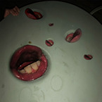
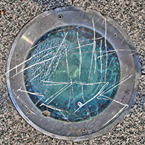
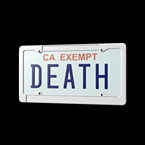
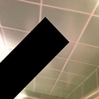
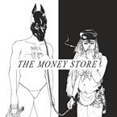

I could write a separate review for every Death Grips album but I'll put them all into one big review. going from newest to oldest. Other things like EPs and mixtapes will probably get added later; this is techinally a wip.
I got into Death Grips a couple years ago. I think the first song I listened to was "Hacker." Ever since then I've listened to all of their music I could find and they're one of my favorite groups.
 YEAR OF THE SNITCH
Released 2018
Genre Punk rap, noise rock
Do I own it? no
Rating 8.5/10
YOTS is dialed in. Not to say other albums don't feel like that. Everything DG does feels different from the next. I used to say that this album was my #1 favorite but I think my feelings have changed. I still place this album very high, like #2. I like the psychedelic rock feel some of the songs dip into.
My favorite tracks are "Black Paint," "The Fear," and "Little Richard." I think that "Black Paint" is one of the best songs they've ever recorded. I have a lot of bias since I get kinfeels from it. I project my experience with the underground facility at the Olympic stadium onto that track.
The end of "Flies" leading into to "Black Paint" with MC Ride screaming "One, two, three, four...!" is fucking great.
BOTTOMLESS PIT
Released 2016
Genre Industrial hip hop, digital hardcore
Do I own it? no
Rating 6/10
If someone gave me a choice between any other DG album and this one, I wouldn't pick this. Bottomless Pit isn't bad but it's missing something. It's less heavy; some of the songs actually sound empty. Maybe that's the point and I "don't get it."
My favorite tracks are "Spikes," "80808," and "Ring A Bell." Another song I get kinfeels from and project onto is "Spikes;" this time with me leading the Clowns. One of DG's best songs again.
 THE POWERS THAT B
Released 2015
Genre Experimental/industrial hip hop, glitch hop, noise rock, hardcore punk, rap rock
Do I own it? no :(
Rating 9/10
this album accidentally replaced YOTS as my favorite. Technically it's two albums but whatever. I used to hate disc 1 but I re-listened to it recently and that's changed. This has to be DG's best album.
This is another one of their albums that's "dialed in" and for both discs that's true. They have a very distinct sound that weirdly compliments the other. Chopped up Björk samples and pulsating synths versus more noisy rock. Disc 2 is still my favorite out of the two. I really want this album on CD.
My favorite tracks are "Pss Pss," "Inanimate Sensation," and "Have A Sad Cum BB." That part in "Pss Pss" from 2:42-3:02 is one of the best sections in a song ever.
FASHION WEEK
Released 2015
Genre Instrumental hip hop, industrial, IDM
Do I own it? no
Rating 7/10
I like this album. I actually don't know what else to say about it because it's just good. Neutral opinion. MC Ride isn't on it so there aren't any lyrics to interpret or latch onto I guess. The fact he isn't on here also makes the album feel longer.
My favorite tracks are "Runway D," "Runway H," and "Runway H (2)"
 GOVERNMENT PLATES
Released 2013
Genre Experimental hip hop
Do I own it? no
Rating 8/10
The music videos for this album are fucking great lol. I really like Government Plates, it's energetic and the visual identity of this album is cool. This is the #3 in my top 3 Death Grip's albums ranking. The only song I actually hate off this album is "Birds." I don't have a specific reason. It just sucks.
My favorite tracks are "This Is Violence Now (Don't Get Me Wrong)," "Feels Like A Wheel," and "Government Plates." I also really like the last track "Whatever I Want (Fuck Who's Watching)."
 NO LOVE DEEP WEB
Released 2012
Genre Experimental hip hop
Do I own it? no
Rating 6.5/10
i finally listened to this album in full again and it's just okay. don't have much to say about it. it feels even more experimental than some of their other albums-- not sure it's in a good way in my opinion. i feel bored listening to some of the songs, very repetitive. others are way better.
my favorite tracks are "deep web" and "bass rattle starts out the sky" but i also like "whammy" and "lock your doors."
 THE MONEY STORE
Released 2012
Genre Experimental/industrial/hardcore hip hop
Do I own it? yes
Rating 8.5/10
The only album I own on CD. Probably their most popular album? Mainstream? This album deserves the praise; it's really good. I don't think I have anything to say about this that people haven't said a million times over. Good album to clean to.
My favorite tracks are "The Fever (Aye Aye)," "Punk Weight," and "Hustle Bones." Again, "The Fever" is another song I get kinfeels from and project onto. I do that a lot with music. I also think "Hustle Bones" (and "Hacker") is very Kaneda-coded or whatever.